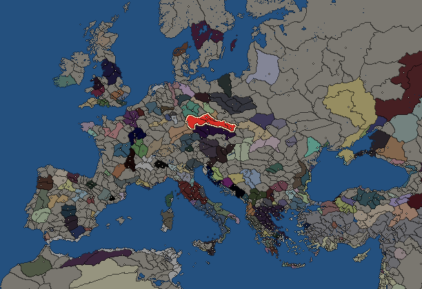
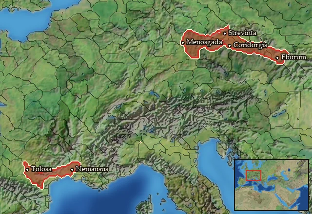

RTR: Imperium Surrectum
RTR: Imperium SurrectumVolcae


- difficulty Medium
- Gallic culture
- believes
 Celtic
Celtic - 4 settlements
- capital Menosgada
- 11,000 manpower
- 4 characters
- 19 faction units
- 431 regional units
The campaign brief
"Now there was a time in the past when the Gauls were superior in valour to the Germans and made aggressive war upon them, and because of the number of their people and the lack of land they sent colonies across the Rhine. And thus the most fertile places of Germany round the Hercynian forest were seized by the Volcae Tectosages, who settled there, and the nation maintains itself to this day in these settlements, and enjoys the highest reputation for justice and for success in war." – Caesar, Bellum Gallicum, 6.24
Suavelos, noble one! You are brave to have crossed this dark forest, few men of your kind come to visit us. We, too, are not native to this land, hailing from southern Gaul but having left its mild climate for a more austere one. To tell you the truth, we had no choice, Gaul was overpopulated and power was held by a small minority. We were mainly landless aristocrats, second or third sons of nobles with little hope of inheriting the family estate. Many of us kept ourselves busy by plundering our neighbours or by joining warrior brotherhoods to fight as mercenaries or auxiliaries. The situation had become dramatic when no one needed mercenaries anymore, and when neighbours started to defend themselves more effectively.
A warrior cannot remain passive, he needs action. It is unthinkable to have lived an idle life, it is an affront that the gods do not tolerate. This is how wars between tribes turned into wars between clans, how theft and murder became common within the tribe. Of course, the ruling nobility decided to react and came up with a rather simple answer: drive us out. This has happened several times in the past, expelling young people to solve a social crisis is a common method. At the time, all of Gaul was going through a similar crisis and we decided to join the big movements towards Greece. Part of our group went to the East, while we stayed with our leader, Bolgios, who decided to cross the Alps and continue travelling up North.
Our leader Bolgios is talented and wise, a man worthy of songs and poems. Thanks to him we have defeated several Illyrian kings and even a Greek king! Many people reproached him for not going on to plunder the Greek cities and settle in their homes. But he seems to have had the right instinct, considering the fate of our comrade Brennos. It is said that some of our brothers are living in Asia at present and that they are living a turbulent life among the Greeks. Part of me would envy them if we did not have more profitable business to attend to here ourselves.
Here, beyond the Hercynian Forest and the Rhine, we hunt! A lot. From early age we learn to track and kill all kinds of animals and in this forest, there is no shortage of choice. All the animals are unusually big compared to Gaul, especially the bulls. When we get tired of the animals, we hunt our neighbours, expand our pastures and explore other areas where our descendants can settle. Here, despite the harsh climate, we easily find space for our cattle. We have more than enough to honour the gods every winter and summer. Despite the distance, we manage to trade with our Vindelician neighbours to the south. Iron, glass, adornments, we manage to haggle a profit out of all sorts of things. Our wares are most popular, in spite of our bellicose temperament, everybody wants to do business with us!
What a pleasure it is to sell at high price a commodity that we will get back next summer by sword!
Starting settlements
Volcae begins with 4 settlements and 11,000 manpower.
| Settlement | Region | Size | Manpower | Already built | Settlement | Region | Size | Manpower | Already built |
|---|---|---|---|---|---|---|---|---|---|
| Menosgada (capital) | Volcaea | large town | 4,800 | 10 buildings | Coridorgis | Volcaea Orientalis | large town | 2,800 | 9 buildings |
| Strevinta | Volcaea Septentrionalis | town | 1,600 | 4 buildings | Eburum | Hercynia | town | 1,800 | 3 buildings |
What is already built in each settlement
Menosgada, in Volcaea: Small Treasury, Governor's Villa, Wooden Palisade, Mast Pasturing (Adaptive husbandry), Homeland, Cisterns (Sanitation), Region Information Scroll, Roads, Basic Armoury, Shrine
Coridorgis, in Volcaea Orientalis: Governor's Villa, Wooden Palisade, Homeland, Cisterns (Sanitation), Region Information Scroll, Roads, Training Grounds, Shrine, Open Field Pasturing (Husbandry)
Strevinta, in Volcaea Septentrionalis: Governor's House, Homeland, Region Information Scroll, Local Barter
Eburum, in Hercynia: Governor's House, Homeland, Region Information Scroll
Starting diplomacy
Allied with (1):  Boii
Boii
Trade agreements with (1):  Boii
Boii
At peace with every other faction.
Like every faction, it is also at war with the  Free Peoples, who hold every settlement no faction does.
Free Peoples, who hold every settlement no faction does.
Homeland
Volcae's homeland is 6 regions. Only there can it install the Homeland government (more on homelands).

Arecomicia · Hercynia · Tectosagia · Volcaea · Volcaea Orientalis · Volcaea Septentrionalis
Starting characters
| Name | Role | Age | Name | Role | Age | Name | Role | Age | Name | Role | Age |
|---|---|---|---|---|---|---|---|---|---|---|---|
| Bolgios | General | 45 | Catuuolcus | General | 20 | Uolkinius | General | 24 | Commius | General | 24 |
Reforms
Open to every faction: Military innovations have arrived!, Second wave of military innovations have arrived!.
Units you can recruit
The same as in the main campaign.